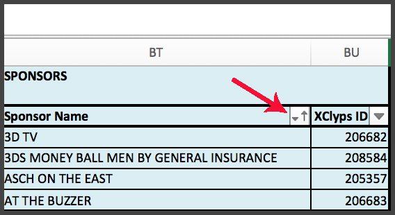

Adding Sponsors To Excel Sheet
- Open a fresh copy of the master Excel Sheet located at this path: \\tsportscssu\tsportscssu\NBA_TD\TD_XClyps_PBUS\NBATV Shared\NBA TV Show Documents\CURRENT- FILES WITH UPDATED DRIVE\NBATV 15-16.xlsm
- Navigate to the "Sponsors" List, located on the "nbatv" tab. This list begins at cell BT1.
- Scroll down to the next available free cell at the bottom the list.
- Following the existing format, enter a descriptive name for the effect in column BT. Enter the XClyps ID for the clip in column BU.
- To the right of the Sponsors header in column BT, click the Sort button (illustrated below).

- Click "Sort A to Z". The column should sort alphabetically and the window will close automatically.
- The new effect should now appear as an option in the dropdown list for EMEM's 60-69.
Removing Sponsors From Excel Sheet
- Open a fresh copy of the master Excel Sheet located at this path: \\tsportscssu\tsportscssu\NBA_TD\TD_XClyps_PBUS\NBATV Shared\NBA TV Show Documents\CURRENT- FILES WITH UPDATED DRIVE\NBATV 15-16.xlsm
- Navigate to the "Sponsors" List, located on the "nbatv" tab. This list begins at cell BT1.
- Scroll down to the sponsor effect you wish to remove.
- Right click on the sponsor effect name (column BT). In the context menu that pops up, mouse over "Delete", and then select "Table Rows". **Note that it is very important to delete sponsors using this method as this is the only way to remove items from the table without affecting cell references on the rest of the sheet.**
- The effect should now be gone from the dropdown list for EMEM's 60-69.